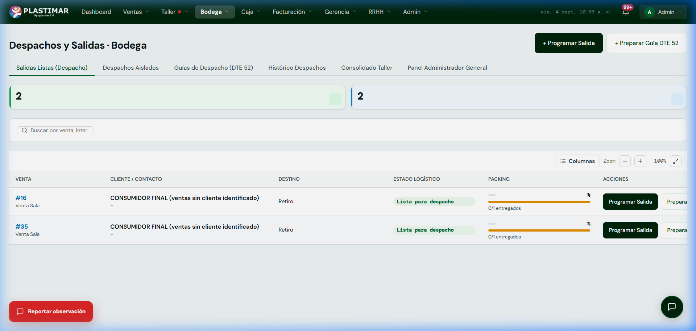

1. Tu Rol en el ERP Plastimar
Logística y EntregaEl equipo de despacho es el eslabón final que conecta todo el esfuerzo de Ventas, Taller y Bodega con la satisfacción del cliente. En tus manos está asegurar que los pedidos salgan embalados correctamente, en la fecha prometida y con el respaldo legal tributario obligatorio ante el SII.
Tu Misión Principal
Organizar la carga por rutas, emitir las Guías de Despacho electrónicas (DTE 52), registrar las entregas en terreno y alertar de inmediato cualquier incidencia o intento de entrega fallido.
2. La Cadena de Despacho y sus Excepciones
Flujo FísicoLa secuencia normal parte en Preparado y continúa por Patio, Didáctico, Reparto y Entregado. También existen estados de excepción: Incidencia, Reprogramado, Retenido y Devuelto. Registra sólo el hito que ocurrió realmente:
1. Patio
Zona de acopio para mobiliario escolar, juegos modulares y estructuras de gran volumen que salen de taller.
2. Didáctico
Consolidación de cajas de psicomotricidad, colchonetas y material didáctico menor para el mismo cliente.
3. Reparto (En Ruta)
Bultos cargados en el vehículo asignado, asociados a la ruta del chofer con su Guía DTE 52 timbrada.
4. Entregado
Recepción conforme por parte del cliente con firma de guía física o digital. Cierre de la orden en el ERP.
Regla de Oro Nº 5: NINGÚN bulto sale a reparto sin Guía DTE 52
Antes de cargar, el responsable debe verificar packing, cantidades, destinatario y el estado autorizado de la Guía DTE 52. Durante la Marcha Blanca este control es humano: no se debe asumir que el sistema bloqueará toda salida incorrecta.
3. Pantalla de Despachos y Salidas
Tu Mesa de TrabajoAl ingresar a Bodega → Despachos encontrarás el panel principal de control logístico:

Procedimiento Paso a Paso para Despachar una Orden
Identificar la Venta y Revisar el Packing
En la pestaña Salidas Listas (Despacho), busca el número de venta o cliente. Verifica que la barra naranja de Packing indique que los productos están completamente preparados (o en el porcentaje parcial pactado).
Programar la Salida
Haz clic en el botón [Programar Salida] en la fila correspondiente:
- Si es Retiro en Sucursal: Se confirma que el cliente se presentó a retirar en mesón.
- Si es Reparto a Domicilio / Colegio: Se asigna la fecha programada, vehículo y conductor responsable.
Emitir la Guía de Despacho DTE 52
Presiona [Preparar Guía DTE 52] para crear/revisar el borrador. Confirma receptor, destino, tipo de despacho, indicador de traslado, productos y cantidades; luego emite, envía y consulta el estado SII. Un Track ID no equivale a aceptación definitiva.
Confirmar la Entrega Conforme
Cuando existe recepción conforme, marca la orden como Entregada y verifica que la venta refleje el cambio. Finanzas debe consultar su bandeja; no dependas de una notificación automática no visible.
4. Situaciones Especiales y Excepciones
Resolución Operativa📦 ¿Qué pasa con los Envíos Parciales?
Si una venta autoriza entregas parciales (ejemplo: 50 colchonetas listas de 100), el sistema te permite generar una Guía DTE 52 únicamente por las 50 unidades listas. El saldo restante seguirá visible en la tabla esperando que Taller termine el lote.
⚠️ Rechazo o Dirección No Encontrada
Si el camión llega al colegio y se encuentra cerrado o el cliente rechaza un ítem, el chofer debe reportar la incidencia. La mercadería reingresa a bodega bajo Retorno de Reparto y la venta queda en estado de alerta para que el vendedor gestione la reentrega.
¿Falla de timbraje DTE 52 o error al programar ruta?
Si al generar la Guía de Despacho el SII no responde o el sistema bloquea una salida indebidamente:
Haz clic en el botón flotante rojo [Reportar observación] en la esquina inferior izquierda. Selecciona Falla, anota el número de venta y el equipo de soporte lo destrabará de inmediato.
5. Checklist antes de salir
Control obligatorio- Picking/packing y cantidad física coinciden.
- Destinatario, dirección, contacto y programación verificados.
- Guía vinculada sin duplicidad y estado autorizado por Facturación.
- Tracking inicia en Preparado y respeta la secuencia.
- Incidencia, reprogramación, retención o devolución quedan registradas.